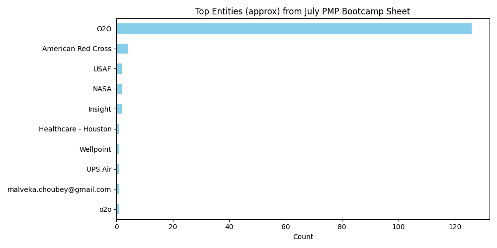
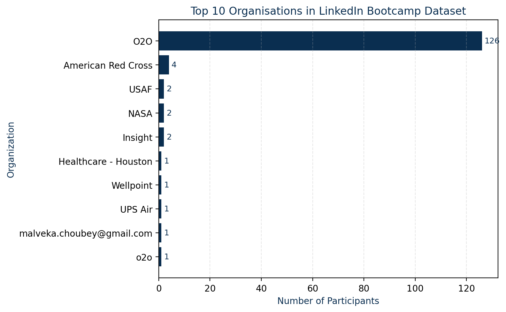
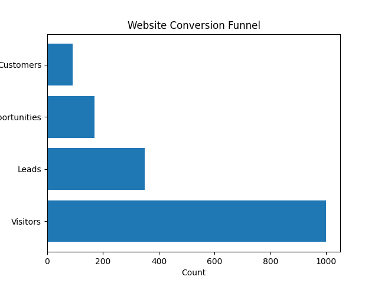

Analytics
Manufacturing data platform
Improved visibility across operational performance for a global manufacturer and enabled faster decision-making at leadership level.
Read case study →Case studies
A short selection of the problems we help organizations solve through structure, insight, and thoughtful execution.

Analytics
Improved visibility across operational performance for a global manufacturer and enabled faster decision-making at leadership level.
Read case study →
Modeling
Built a scenario-based model to support fundraising conversations, planning, and a more disciplined view of future performance.
Read case study →
Growth
Rebuilt a fragmented reporting flow into a simpler dashboard experience that connected commercial activity to business outcomes.
Read case study →The right next step usually begins with a clear question, not a complicated dashboard.
Discuss a project